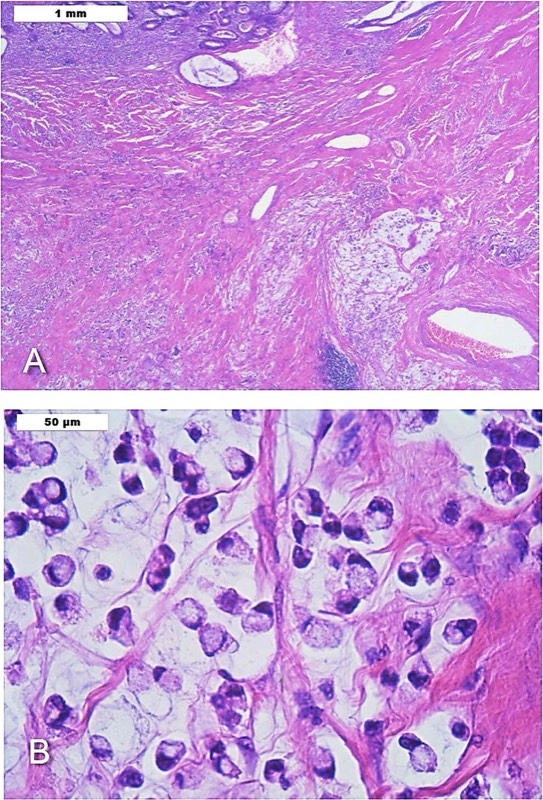

消化性潰瘍與幽門螺旋桿菌（含胃酸生理與胃腺組織學）
一階考胃腺細胞與胃酸調控，二階考根除療法與併發症手術，是最典型的「同一主題兩階段各考一半」
近五年 38 題（一階 10／二階 28）
H. pylori 感染
定殖分布
持續 B 細胞刺激
胃竇 D 細胞受抑制
somatostatin 下降
胃體腺體破壞
胃 MALT 淋巴瘤
gastrin 上升 → 胃酸增加
萎縮性胃炎 → 胃酸下降
十二指腸酸負荷上升
胃上皮化生
腸化生
十二指腸潰瘍
分化不良
胃腺癌
腸型
壁細胞（parietal/oxyntic）
鹽酸＋內在因子
→ 二階：胃底腺上中段（頸部至體部）；幽門腺幾乎沒有
主細胞（chief/zymogenic）
胃蛋白酶原
→ 二階：胃底腺底部
黏液頸細胞
可溶性黏液
→ 二階：頸部
表面黏液細胞
不溶性黏液＋碳酸氫鹽
→ 二階：表面與小凹
G 細胞
gastrin
→ 二階：幽門腺（胃竇）
D 細胞
somatostatin
→ 二階：胃竇與胃體
ECL 細胞
組織胺
→ 二階：胃體
組織胺（ECL 細胞）
H₂
→ 二階：cAMP
Gastrin（G 細胞）
CCK-B
→ 二階：Ca²⁺（且大部分作用經由刺激 ECL 釋放組織胺）
乙醯膽鹼（迷走神經）
M₃
→ 二階：Ca²⁺
頭期
約 30%
→ 二階：看到、聞到、想到食物
胃期
約 60%
→ 二階：胃擴張、胜肽與胺基酸
腸期
約 10%
→ 二階：十二指腸內食糜
來源
胃竇 G 細胞
→ 二階：十二指腸 S 細胞
刺激
胜肽／胺基酸、胃擴張、迷走（GRP）
→ 二階：十二指腸酸化（pH <4.5）
主要作用
促胃酸分泌、營養性（trophic）作用於胃黏膜
→ 二階：促胰臟導管分泌碳酸氫鹽（中和酸）
抑制
胃內 pH <3（經 somatostatin）
→ 二階：—
考點
萎縮性胃炎因低酸 → gastrin 代償性升高
→ 二階：「最主要的直接作用」是碳酸氫鹽而非消化酶
壁細胞分泌 HCl 與內在因子
機轉：H⁺/K⁺-ATPase
二階：PPI 作用位置
決策：飯前服用、長期 B12 缺乏
主細胞分泌 pepsinogen
機轉：需酸活化為 pepsin
二階：抑酸即降低蛋白酶活性
決策：抑酸治療的雙重效果
ECL 細胞與組織胺放大
機轉：H₂ → cAMP
二階：H₂ blocker 有效的原因
決策：夜間酸突破的處置
G 細胞 gastrin 與 pH 負回饋
機轉：低 pH 抑制 gastrin
二階：萎縮性胃炎 gastrin 升高
決策：高 gastrin 的鑑別（低酸 vs ZES）
Secretin 由酸刺激、抑制 gastrin
機轉：生理負回饋
二階：secretin 刺激試驗反常上升
決策：診斷 gastrinoma
前列腺素維持黏膜防禦
機轉：COX-1
二階：NSAID 潰瘍
決策：misoprostol 預防、孕婦禁用
Urease 分解尿素
機轉：產氨中和酸
二階：尿素呼氣試驗
決策：停 PPI 兩週再驗
十二指腸後壁解剖鄰接 GDA
機轉：血管關係
二階：潰瘍大出血
決策：內視鏡止血或血管栓塞
內在因子與末端迴腸吸收 B12
機轉：吸收路徑
二階：胃切除後貧血
決策：終生補充 B12
臨床表現
併發症：出血（最常見）、穿孔、阻塞、穿透。
警訊症狀（alarm features）：體重減輕、吞嚥困難、反覆嘔吐、消化道出血、
消化不良症狀
有警訊症狀或年齡較大
立即上消化道內視鏡
檢測 H. pylori
發現潰瘍
陽性
切片排除惡性 + 治療後追蹤癒合
根除 + 抑酸治療
驗空腹 gastrin
考慮 Zollinger-Ellison
根除治療
試用 PPI 4 週
治療結束 4 週後驗療效
呼氣或糞便抗原
功能性消化不良
內視鏡無病灶、症狀符合 Rome IV
沒有警訊症狀的年輕人先想功能性
胃癌
潰瘍邊緣不規則、體重減輕
胃潰瘍一定切片
膽道疾病
右上腹痛、與油膩食物相關、Murphy sign
痛在右上且放射到肩胛
急性胰臟炎
上腹痛穿透至背、酵素升高
痛到背＋amylase/lipase 高
心肌梗塞（下壁）
上腹不適合併冷汗、心電圖變化
上腹痛也要想心臟
Zollinger-Ellison
多發、不典型位置潰瘍、腹瀉、難治
難治或多發潰瘍就要驗 gastrin
11.1 H. pylori 根除
療程以 14 天為主可提高成功率；PPI 劑量足夠也很關鍵（高劑量或使用代謝穩定的 PPI）。
113-2 醫學三 Q19 問的就是「clarithromycin 抗藥性高時該選什麼」。
根除後要驗療效；胃 MALT 淋巴瘤在早期可能單靠根除就消退。
11.2 潰瘍藥物
11.3 併發症處置
11.4 Zollinger-Ellison 症候群
由 gastrinoma 引起（114-2 醫學五 Q34）；多位於「gastrinoma triangle」
約 20–25% 合併 MEN1（副甲狀腺、胰島、腦下垂體）。
表現：多發或不典型位置潰瘍、腹瀉（酸使胰脂酶失活 → 脂肪瀉）、逆流嚴重。
診斷：空腹 gastrin 顯著升高 ＋ 胃 pH <2；secretin 刺激試驗反常上升。
治療：高劑量 PPI 控制症狀，可切除者手術；影像用生長抑素受體造影／PET。
11.5 胃切除後併發症（外科題重點）
預後
根除 H. pylori 後十二指腸潰瘍復發率由每年約七成降至個位數。
持續使用 NSAID 或未根除是復發主因。
萎縮性胃炎與腸化生（OLGA III–IV）仍有胃癌風險，需長期內視鏡監測 —
流行病學
H. pylori 全球盛行率約五成；台灣成人盛行率已由早年的高比例逐步下降，
十二指腸潰瘍與 H. pylori 相關性約 90%，胃潰瘍約 70%。
NSAID／aspirin 使用增加，使非 H. pylori 潰瘍比例上升，
台灣曾以「除菌預防胃癌」的社區研究（如馬祖計畫）成為國際範例 — 本土考點。
尿素呼氣試驗
urease 分解標記尿素
非侵入、可驗療效
糞便抗原
抗原偵測
非侵入、可驗療效
快速尿素酶試驗（CLO）
切片測 urease
內視鏡當下可知
組織切片
直接看菌與發炎
可評估萎縮、腸化生
血清抗體
IgG
便宜
培養與藥敏
分離菌株
指導抗藥性
影像與內視鏡
內視鏡是診斷主力；胃潰瘍必須切片排除惡性，且應在治療後追蹤癒合。
良性 vs 惡性潰瘍：良性邊緣平滑、皺襞放射狀集中至潰瘍緣；
十二指腸球部變形：慢性潰瘍癒合纖維化 → 三葉草／苜蓿葉狀（cloverleaf）變形
穿孔：立位胸腹部 X 光可見橫膈下游離氣體。
Forrest
用途：潰瘍出血內視鏡分級
族群：消化性潰瘍出血
限制：觀察者一致性中等
陷阱：Forrest III 不需內視鏡治療
決策：Ia–IIa 需止血；IIc/III 可早期進食出院
Glasgow-Blatchford
用途：內視鏡前風險
族群：上消化道出血
限制：不含內視鏡所見
陷阱：與 Rockall 用途混淆
決策：≤1 可門診處理
Rockall
用途：再出血與死亡率
族群：同上
限制：完整版需內視鏡
陷阱：誤用於決定住院
決策：高分者加強監測
OLGA／OLGIM
用途：萎縮與腸化生分期
族群：慢性胃炎
限制：需多點切片
陷阱：誤以為是菌量分級
決策：III–IV 期需內視鏡監測
Sydney system
用途：胃炎組織學描述
族群：慢性胃炎
限制：描述性
陷阱：與 OLGA 混淆
決策：標準化切片位置
主細胞嗜鹼性、壁細胞嗜酸性；幽門腺沒有壁細胞。
胃酸三條刺激路徑與組織胺的放大角色。
gastrin 與 secretin 的來源、刺激與作用。
clarithromycin 抗藥性高地區改用鉍劑四合一或併用療法。
驗療效沒停 PPI（偽陰性）、用血清抗體驗療效（不可）。
胃潰瘍不切片。
把 Cushing 與 Curling 潰瘍對調。
在「胃酸刺激效果最低」題目混入間接作用強的因子；
111-1 一階 醫學一 65
何種刺激促進胃酸效果最低
→ 缺乏組織胺放大的路徑
111-1 一階 醫學二 92
何種胃病與 H. pylori 最無直接關係
→ 非 H. pylori 相關者
111-1 二階 醫學三 18
胃酸分泌敘述何者錯誤
→ 三期與受體細節
111-1 二階 醫學三 22
內視鏡所見與再出血機率
→ 乾淨潰瘍底（Forrest III）
111-1 二階 醫學五 41
何種胃部變化與胃癌癌前變化關聯最大
→ 腸化生／分化不良
111-2 一階 醫學一 63
gastrin 的敘述何者正確
→ 來源、刺激與負回饋
111-2 一階 醫學二 67
腦損傷壓力性潰瘍優先給藥
→ 抑酸藥物選擇（Cushing ulcer）
111-2 二階 醫學三 74
十二指腸球部變形形態
→ 三葉草／苜蓿葉狀
112-1 一階 醫學二 4
呼氣試驗測何菌／何酵素／何氣體
→ H. pylori／urease／CO₂
112-1 一階 醫學二 80
胃 MALT 淋巴瘤敘述
→ 與 H. pylori 關係、根除可緩解
112-1 二階 醫學三 21
何者不是胃上皮攻擊因子
→ 防禦因子（前列腺素等）
112-1 二階 醫學五 37
Billroth II 術後餐後痛、吐膽汁後緩解
→ 輸入袢症候群
112-2 一階 醫學一 64
胃酸分泌與調控何者正確
→ 生理細節
113-1 一階 醫學一 64
secretin 敘述何者正確
→ 酸刺激、促碳酸氫鹽
113-1 二階 醫學三 17
胃藥機轉與使用何者錯誤
→ sucralfate 需空腹等
113-2 一階 醫學一 43
何細胞分布於胃底腺而非幽門腺
→ 壁細胞
113-2 二階 醫學三 19
clarithromycin 抗藥性高時的除菌方案
→ 鉍劑四合一／併用療法
113-2 二階 醫學五 38
胃切除後併發症敘述
→ 傾食、輸入袢、B12
114-1 一階 醫學一 43
分泌 pepsinogen 且嗜鹼性的細胞
→ 主細胞
114-1 二階 醫學三 19
家族多人潰瘍病史的判讀
→ H. pylori 家族聚集或 ZES
114-1 二階 醫學五 54
消化性潰瘍穿孔手術敘述
→ 腹腔鏡與補片修補
114-2 一階 醫學一 65
secretin 最主要的直接作用
→ 促胰管碳酸氫鹽分泌
114-2 二階 醫學五 33
十二指腸潰瘍治療何者錯誤
→ 治療原則
114-2 二階 醫學五 34
Zollinger-Ellison 由何腫瘤導致
→ gastrinoma
胃酸分泌調控全圖：壁細胞、ECL 細胞（組織胺）、G 細胞（gastrin）、D 細胞（somatostatin）的相互

CC BY-SA 3.0／see #File history English Wikipedia
胃底腺組織學（已標註）：壁細胞嗜酸呈粉紅、主細胞嗜鹼呈藍紫。口訣「主藍壁紅、壁在上主在下」

CC0／Mikael Häggström, M.D. Author info - Reusing images- Conflicts of interest: None Mikael Häggström, M.D.
壁細胞質子幫浦（H⁺/K⁺-ATPase）示意，圖中標出 PPI 的作用位置 —— 這是 PPI 為何要飯前服用（需要幫

CC BY-SA 4.0／MustafaSalahalden
印戒細胞癌（低倍 A／高倍 B）：細胞質內黏液把細胞核推擠到邊緣呈戒指狀。瀰漫型胃癌與 CDH1 突變相關

CC BY 4.0／Hammami MB, Aboushaar R, Musmar A, Azhar M
P-CAB（vonoprazan）
起效快、抑酸持久、不受 CYP2C19 多型性影響；用於根除與難治性酸相關疾病
「PPI 以外的抑酸藥」新選項
抗藥性導向治療
依培養或分子檢測選藥（susceptibility-guided therapy）逐漸成為建議
「經驗性 vs 導向性」的比較題
除菌預防胃癌的長期證據
大型世代與台灣本土研究支持族群篩檢除菌降低胃癌
公衛與消化科交界考點
ACG 2024 H. pylori 指引
明確不再建議常規使用未加鉍的三合一療法
舊教科書與新指引衝突處
胃癌前病變監測
以 OLGA／OLGIM 分期決定監測間隔
「除菌後還要不要追蹤」
NSAID 相關潰瘍的風險分層
併用抗血小板／抗凝血劑者的預防策略
跨科整合題材
進場
誰會來、誰是高風險
分流
穩不穩、有沒有警訊
一線資料
先開哪些檢驗與影像
鑑別
可能是什麼、怎麼分
確診
什麼證據才算數
分級
多嚴重、哪一期
處置
依分級做什麼
追蹤預後
之後追什麼